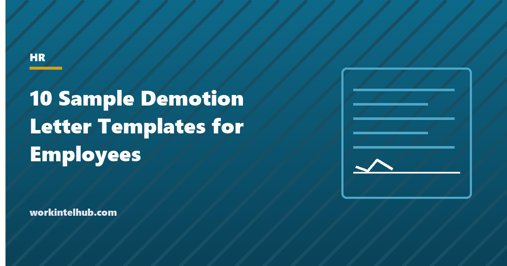

10 Sample Demotion Letter Templates for Employees

A demotion changes a person's role, pay or status downward, and the letter that confirms it is read more carefully than almost any other HR document, by the employee and sometimes by a lawyer. It needs to say what is changing, from when, why, and what the new terms are, in language that is factual and consistent with the process that came before it. A demotion letter that reads differently from the warning letters, or that gives a reason the file does not support, is the exhibit in a constructive dismissal or discrimination claim.
Ten templates cover the situations that call for different wording: performance, conduct, restructure, a voluntary request, red-circled pay, a move from management to individual contributor, a temporary demotion, the end of a probationary promotion, reduced hours, and the outcome of an appeal. The Excel workbook holds a demotion register and a process checklist, because the process is what makes the letter defensible.
Download the templates
Free files: Word, Excel and PDF
Three files, free, no email required. Word to edit, Excel to track, PDF to print or share.
Templates open in Microsoft Word, Excel, Google Docs and Sheets, LibreOffice and any PDF reader. Free to use and adapt for your organisation.
The ten letters
| Situation | What the letter must establish |
|---|---|
| Performance-based demotion | The process that preceded it and the standard not met |
| Demotion for conduct | The investigation, the hearing and that it is an alternative to termination |
| Demotion in a restructure | That the role ceased and the offer is not performance-related |
| Voluntary demotion at the employee's request | That the employee asked, in writing, and may return |
| Demotion with pay unchanged (red-circled) | The protection period and what happens after |
| Demotion from management to individual contributor | The handover and the value of the new role |
| Temporary demotion | The dates and the return |
| Demotion at the end of a probation in a promoted role | That it is not disciplinary and a plan follows |
| Demotion with reduced hours | Pro-rated pay and benefits rules |
| Acknowledgement of demotion appeal outcome | The reviewer, the material considered and the decision |
The process is the defence
A demotion is lawful in at-will employment for any lawful reason, but it is a material change that can amount to constructive dismissal where it breaches a contract, and it is a textbook adverse action in discrimination and retaliation claims. The defence is process: a documented reason consistent with everything written before (reviews, warnings, the performance improvement plan), alternatives considered, the employee heard before the decision, authority and HR review, an appeal route, and a letter whose language matches the file. The checklist in the workbook walks through it. Timing matters too: a demotion shortly after a complaint, a leave request or a protected disclosure needs a reason that was already on the record before the complaint.
Pay, benefits and the practical terms
- State the new pay, the effective date and that payroll changes from that date, not retroactively.
- Red-circling (maintaining current pay for a period) softens a restructure demotion; give it an end date or condition.
- Reduced hours change benefits eligibility; state the rules.
- Continuous service, accrued leave and vesting are unaffected unless the letter says otherwise; say they are unaffected.
- Agree with the employee how the team will be told; the transfer announcement format works for a neutral framing.
- Where the alternative was termination, say so; it changes how the letter is read. The termination letter covers that path, and the progressive discipline policy the steps before it.
Key takeaways
- A demotion letter states what changes, from when, why, and the new terms, in language consistent with the file.
- The process is the defence: documented reason, alternatives, hearing, authority, appeal.
- Set pay from the effective date, state red-circling periods and benefits rules, confirm service is unaffected.
- Voluntary and restructure demotions must say they are not performance-related; temporary ones need an end date.
Frequently asked questions
Can an employer demote an employee?
In at-will employment, yes, for any lawful reason, provided it does not breach a contract and is not discriminatory or retaliatory. Demotions that follow a complaint, a leave request or a protected disclosure, or that single out a protected group, are where claims arise. Document the reason before the decision and follow a fair process.
What should a demotion letter include?
The current and new title, the effective date, the reason stated factually and consistently with prior records, the new pay and when it takes effect, the new manager and responsibilities, what is unchanged (service, benefits), any support or development plan, the right to respond or appeal, and signatures.
Does a demotion have to reduce pay?
No. Pay can be maintained (red-circled) for a period, common in restructures, or permanently. The letter should state the pay and, where it is maintained temporarily, the end date or condition.
Can an employee refuse a demotion?
An employee can decline a new role; in a restructure the alternative is usually redundancy on the stated terms, and in a performance or conduct case it may be termination. The letter should say what the alternative is. A demotion imposed in breach of contract may be treated by the employee as a dismissal.
Should a demotion be announced to the team?
The change in responsibilities needs to be communicated so work is reassigned; the reason does not. Agree the wording with the employee and use a neutral format that states the new role and handover without characterising why.